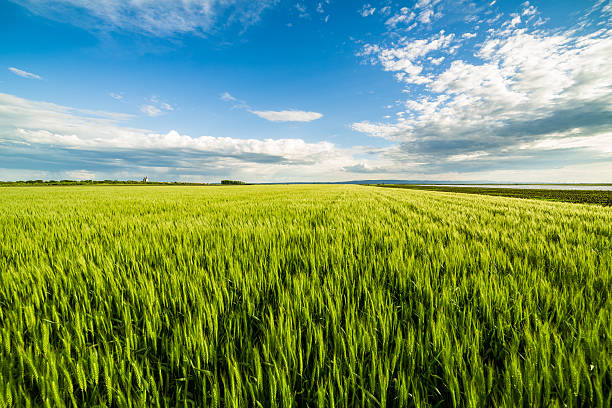
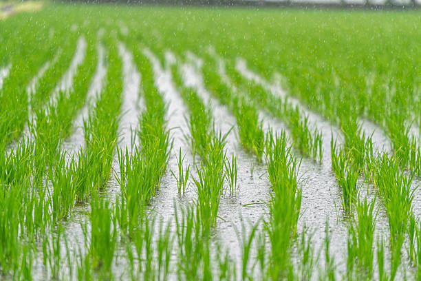
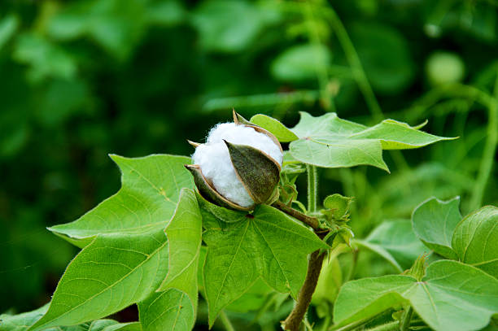
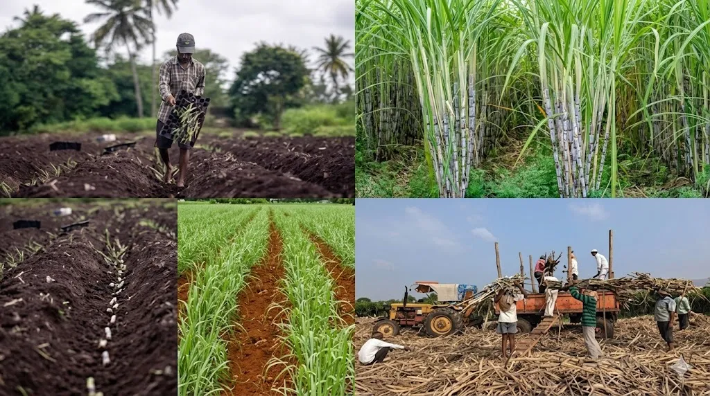
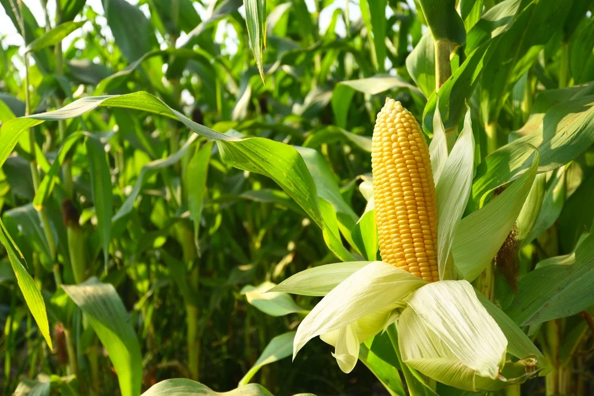
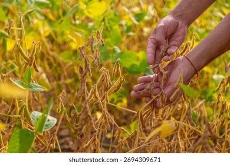
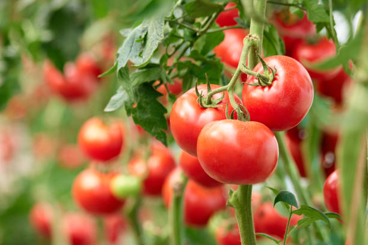
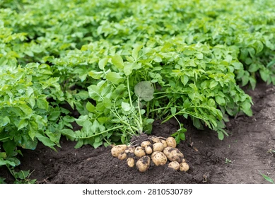
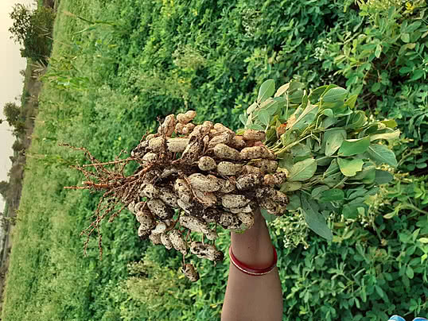
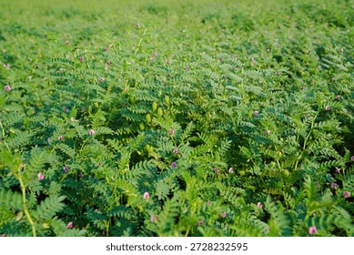

Crop Information
Introduction to Crop
Crops are an essential part of agriculture and play a major role in providing food, raw materials, and income for farmers. At AgriConnect, we provide information about different types of crops, their growing seasons, soil requirements, and cultivation methods. Our goal is to help farmers understand crop characteristics and choose suitable crops according to their local climate, soil conditions, and available resources.
Types of Crop
- Wheat
- Category : Food grain crop
- Season : Rabi (winter)
- Climate : Cool weather during growth and warm, dry weather during ripening.
- Soil : Fertile, well-drained loamy soil.
- Uses : Flour, bread, chapati, and other food products.
- Rice
- Category : Food grain crop
- Season : Mainly Kharif (monsoon)
- Climate : Warm and humid conditions.
- Soil : Clayey or loamy soil with suitable water availability.
- Uses : Staple food and various rice-based products.
- Cotton
- Category : Cash crop
- Season : Mainly Kharif
- Climate : Warm weather with a relatively long growing season.
- Soil : Well-drained black cotton soil is suitable.
- Uses : Textile manufacturing, clothing, and cottonseed oil.
- Sugercane
- Category : Commercial crop
- Season : Varies by region; often planted in different seasons.
- Climate : Warm conditions with sufficient moisture.
- Soil : Deep, fertile, well-drained soil.
- Uses : Sugar, jaggery, molasses, and ethanol production.
- Maize(Corn)
- Category : Cereal crop
- Season : Mainly Kharif, but also grown in other seasons.
- Climate : Warm weather with adequate sunlight.
- Soil : Fertile, well-drained loamy soil.
- Uses : Human food, animal feed, and industrial products.
- Soybean
- Category : Oilseed and pulse crop
- Season : Kharif
- Climate : Warm weather with moderate rainfall.
- Soil : Well-drained loamy soil.
- Uses : Soybean oil, protein-rich foods, and animal feed.
- Tomato
- Category : Vegetable crop
- Season : Varies by region and climate.
- Climate : Moderate temperatures with sufficient sunlight.
- Soil : Fertile, well-drained soil rich in organic matter.
- Uses : Curries, salads, sauces, and food processing.
- Potato
- Category : Tuber crop
- Season : Mainly Rabi in many parts of India.
- Climate : Cool weather.
- Soil : Loose, fertile, well-drained sandy loam soil.
- Uses : Chips, fries, vegetables, and other food products.
- Groundnut (Peanut)
- Category : Oilseed crop
- Season : Mainly Kharif; also grown in other seasons in suitable regions.
- Climate : Warm weather with moderate rainfall.
- Soil : Light, loose, well-drained sandy loam soil.
- Uses : Edible oil, snacks, peanut butter, and animal feed.
- Chickpea (Chana)
- Category : Pulse crop
- Season : Rabi
- Climate : Cool and relatively dry weather.
- Soil : Well-drained loamy or clay loam soil.
- Uses : Dal, roasted chana, flour (besan), and protein-rich foods.









